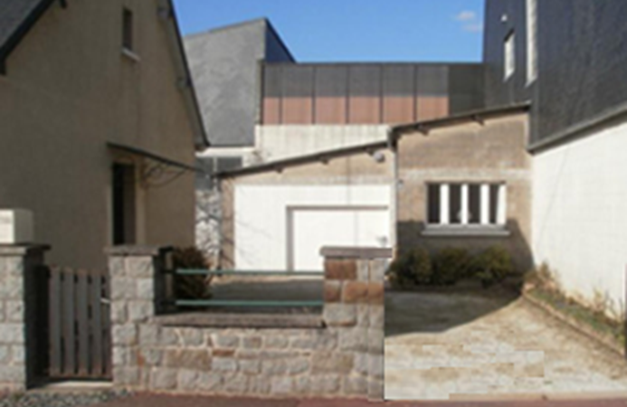

Séance 0: Situation déclenchante
Monsieur DURAND possède une maison avec une allée qui permet d’accéder à son garage. Parfois, il ne peut pas ranger sa voiture dans son garage le soir, car certaines voitures utilisent son allée comme lieu de stationnement.

Mes constats : (Durée 5') Que se passe-t-il ? (De quoi parle-t-on ? Qui est concerné ? Combien ? Quand est-ce que cela passe ? Où cela se passe-t-il ? Comment cela se passe-t-il ? Pourquoi cela se passe-t-il comme cela ? …
Mon problème technique à résoudre : (Durée 5') A partir des constats, rédiger la question que l'on se pose à propos du problème de société : Pourquoi … ? Comment … ?
Mes idées pour y répondre : (Durée 5')
Les propositions retenues pour répondre au problème technique : (Durée 5')
🧠 Teste tes connaissances
Réponds aux questions puis clique sur « Vérifier » — la correction s'affiche aussitôt.
1. Pourquoi M. Durand ne peut-il parfois pas ranger sa voiture dans son garage le soir ?
2. À quoi sert l'allée de la maison de M. Durand ?